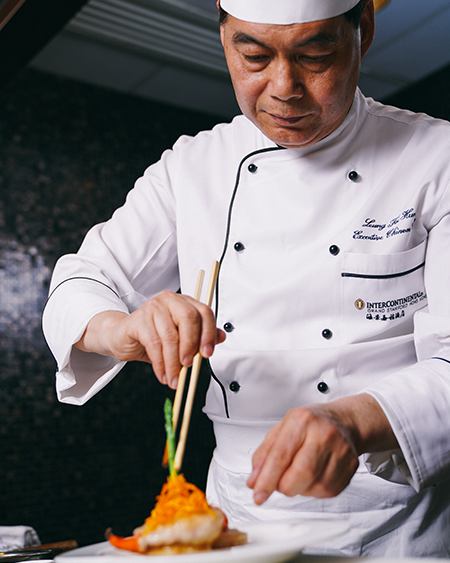
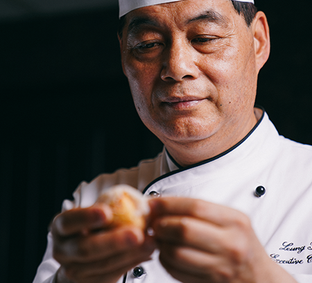
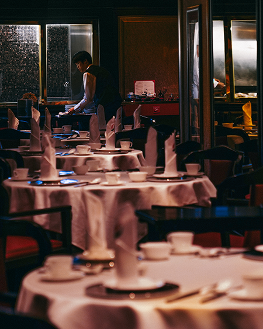
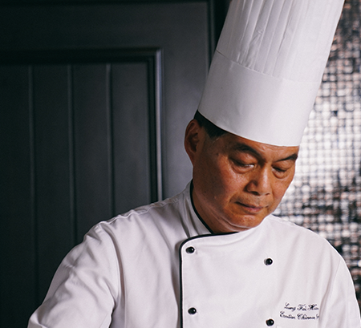
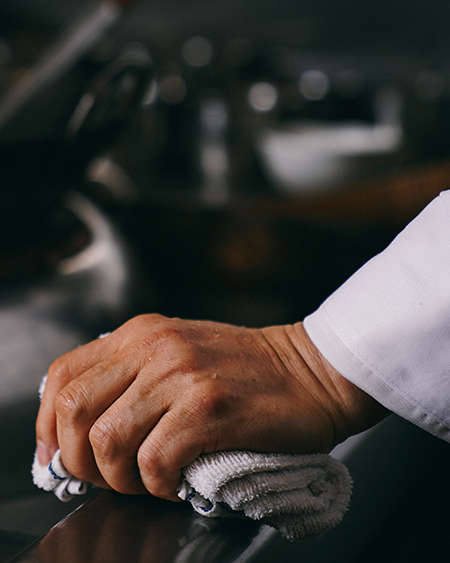
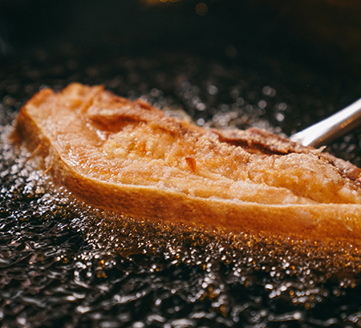
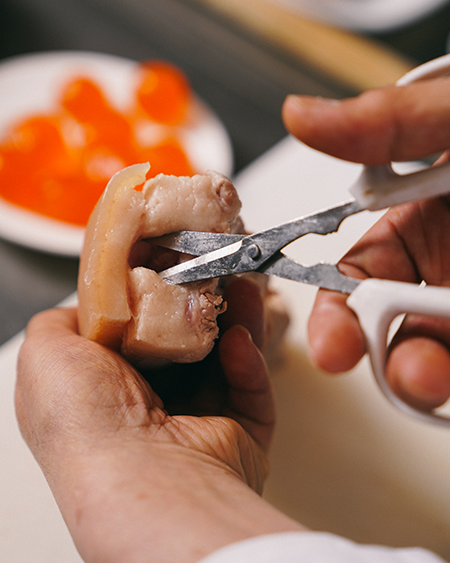

故事，由16歲說起
那年，梁師傅從鄉下西樵申請來港，中學未畢業，人生路不熟，有叔父提議他到酒樓學廚，至少三餐溫飽，「入了行才知後悔，那時在廚房做最低位，行內叫細路，乜都要做，洗碗洗地搬貨一腳踢，洗廁所都是家常便飯。酒樓的師傅頗刻薄，唔止呼呼喝喝，仲日日要幫他們洗衫洗褲，有時還會吩咐我去買戲飛買酒買煙，但全部唔畀錢。」那時候，就是連屋都租不起，放工就在酒樓架起木椅，蓋上枱布就睡覺。「只有$880一個月，就在廚房出糧，用袋仔入住，師傅會叫名入去：梁輝雄呢袋你的！日子就是這樣過。」
說到廚房，梁師傅話酒樓分門別類，有雞佬殺雞，有煲仔佬做煲仔菜，出品是粵菜，也似客家菜，鹹雞、魚蛋、牛丸、燘豬肉等，全部都是基本。是的，那個時代的香港，醉瓊樓、東江大飯店、八仙樓等等，大行其道，分店處處有，賣的都是客家菜。


肯搏肯捱，終遇伯樂
捱過幾年，總算學會基本功，不再是細路。就在此時，梁師傅遇上北園野味海鮮酒家的鍾師傅。
過檔後雖然都是從頭來，不過肯搏肯捱，轉眼間便由「細路」晉升為「打河」（負責執材料給大廚烹調），之後再升做「尾鑊」（最尾級數的大廚）。「跟鍾師傅有個好處，就係乜都有得學，都係嚴格，不過粵菜的概念和做法都一一相授，就是珍稀食材都任由學師去處理。」中菜的師徒制度，以至餐廳的管理，梁師傅都獲益良多。但最大的收穫，肯定是結識到太太，「當年老婆喺嗰度做傳菜員，經常被人蝦，我替她出頭，那個年頭廚房佬都愛找傳菜員做對象。」
累積經驗，進軍日本
婚後不久，梁師傅就被邀請到日本當中菜師傅，地位提升，人工亦三級跳，「當年在香港當大廚每月只有五、六千元人工，到日本做廚可以賺多兩至三倍。而且，當地人很尊師重道，對廚藝又認真，我唔止要做得更好，更發現自己在某些方面也有不足之處。」雖沒說出口，嫌虛，其實是梁師傅的成功之道。當然，嫌是不夠的，還加上勤力。他，以前更是行內有名的工作狂。
像大兒子剛滿月，他便隻身到日本工作；小兒子出世時，他也不在家人身邊。明明在海景軒工作廿幾年，已是行政總廚，卻幹活得像個打雜：掌廚、設計新菜、招呼客人，編更、試茶、置碗等、甚或洗魚缸，他都親力親為。
「記得有次和太太在深圳東門已點了菜，公司一通電話，說宴會的糖水出了問題，立即便放下筷子撲返香港。仲有次正好放假，自動請纓去湊仔放學，在幼稚園門外等來等去等不到，於是打電話給太太，原來個仔已經升小一！」聽落誇張，卻說出梁師傅真心喜歡煮菜。
以為一帆風順，於星級食府工作二十幾年，當上行政總廚，事業又如日中天，除了米芝蓮的嘉許，煮的菜式又連連獲獎。2014年，卻毅然放下工作，選擇退休。「我退休，是因為膝蓋痛得厲害，心口揦住痛，無法集中精神。」梁師傅說道。他向酒店總經理遞信，對方呆了便說：「你自己同大老闆講。」老闆希望他放長假，梁師傅卻了解自己會放心不下，不想拖拖拉拉，還是決定全身而退。


行政總廚變退休男。梁師傅意外地適應。
他認真做過檢查，醫生說他腳痛是因尿酸高，心絞痛是因為心瓣發大，要戒口和減肥。他便天天早上六時起身去游水、行山，生活變得健康又正常。「以前去食飯，看別人的餐牌像看參考書，又愛看別人配搭夠不夠好，專找別人的錯處。退休後去吃飯，純粹地吃，反而會察覺細微的地方都做到，品質也不錯，招呼的侍應原來很好笑容。」眼界放開，從前單單聚焦食物上，擴大至五感體驗。
休息，為了走更遠
身體回復，酒店高層當然不想放他走，開始出動說客力勸老臣回朝。梁師傅推了又推，不過酒店答允減省師傅工作量，讓他少開會多放假。梁師傅思前想後，「一來身體好多了，二來我真的喜歡下廚，三來，也是最重要的，找到一個賞識又信任自己的老闆真的不容易。」梁師傅道出他出山的原委。休息下來，又回到崗位上。至於菜式，也有點微妙的變化。梁師傅拿手的鹹魚包、杏仁茶仍舊好味，擅長的懷舊廣東菜更加發揮得淋灕，如網油雙脆為1950年代流行的民間美食，以豬網油包裹豬腦、豬膶及野菌炸至鬆脆。另一道銀雲星斑藏珍玉，是廣東省陽江市名菜，新鮮星斑球及馬友鹹魚一起蒸煮，鹹香中帶鮮魚味，令味道層次更豐富。
以前跟鍾師傅，他行得好前，少少反傳統，係要人做我唔做，我做就做得更加好，就好似白灼馬佳牛，可以話係火鍋前身，就拿牛肉輕灼，鮮甜又有肉味；又好似一味加冠進爵，就係官燕蛋白，以前真係好多人都未識。這一個想法，都幾影響梁師傅，總會向前行，總想創新，於傳統上加點新鮮，像重出江湖的菜單中一道冬坡扣釀肉，就是在冬瓜挖空了釀入豬肉，睇落似東坡肉，卻是健康版本，滋味不遜，冬瓜嗦盡肉汁的味道，而且扣得夠時間，入口即化。一道又一道，傳統菜中添新意， 功架，舉重若輕。
「無捷徑的，邊可以一步登天？湯要慢熬菜也要慢煮才有味道。你睇糯米雞就知 ，洗完米浸米，浸到咁上下又要撈，蒸透先可以落味，依家好多地方都唔做，就咁加味，咪無咁好食囉。所以，做菜同做人一樣，無捷徑！」
海景軒
地址：尖東麼地道70號海景嘉福酒店B2層
電話： 2731 2883

梁輝雄師傅：
呢個世界無捷徑，做菜係咁，做人都係咁。
「入了行才知後悔，那時在廚房做最低位，行內叫細路，乜都要做，洗碗洗地搬貨一腳踢，洗廁所都是家常便飯。酒樓的師傅頗刻薄，唔止呼呼喝喝，仲日日要幫他們洗衫洗褲，有時還會吩咐我去買戲飛買酒買煙，但全部唔畀錢。」回想起40年前剛入行的往事，梁輝雄師傅笑笑口說。
那時候的梁輝雄月薪只有$880一個月，就是連屋都租不起，放工就在酒樓架起木椅，蓋上枱布就睡覺。
酒樓廚房裏，分門別類，有雞佬殺雞，有煲仔佬做煲仔菜，出品是粵菜，也似客家菜，鹹雞、魚蛋、牛丸、燘豬肉等，全部都是基本。那個時代的香港，醉瓊樓、東江大飯店、八仙樓等等，大行其道，分店處處有，賣的都是客家菜。

19xx年，梁輝雄從客家菜酒樓轉戰粵菜，遇上了北園野味海鮮酒家鍾師傅。「跟鍾師傅有個好處，就係乜都有得學，都係嚴格，不過粵菜的概念和做法都一一相授，就是珍稀食材都任由學師去處理。」
「以前跟鍾師傅，他行得好前，少少反傳統，係要人做我唔做，我做就做得更加好，就好似白灼馬佳牛，可以話係火鍋前身，就拿牛肉輕灼，鮮甜又有肉味；又好似一味加冠進爵，就係官燕蛋白，以前真係好多人都未識。」這一個想法，一直影響梁師傅，總會向前行，總想創新，於傳統上加點新鮮。
像重出江湖的菜單中一道冬坡扣釀肉，就是在冬瓜挖空了釀入豬肉，睇落似東坡肉，卻是健康版本，滋味不遜，冬瓜嗦盡肉汁的味道，而且扣得夠時間，入口即化。一道又一道，傳統菜中添新意， 功架，舉重若輕。
梁輝雄是行內有名的工作狂
大兒子剛滿月，梁輝雄便隻身到日本工作，感受很深「當地人很尊師重道，對廚藝又認真，我唔止要做得更好，更發現自己在某些方面也有不足之處。」；
小兒子出世時，他也不在家人身邊。明明在海景軒工作廿幾年，已是行政總廚，卻幹活得像個打雜：掌廚、設計新菜、招呼客人，編更、試茶、置碗等、甚或洗魚缸，他都親力親為。
「記得有次和太太在深圳東門已點了菜，公司一通電話，說宴會的糖水出了問題，立即便放下筷子撲返香港。仲有次正好放假，自動請纓去湊仔放學，在幼稚園門外等來等去等不到，於是打電話給太太，原來個仔已經升小一！」聽落誇張，卻說出梁師傅真心喜歡煮菜。

激流勇退，眼界放開
「醫生說我腳痛是因尿酸高，心絞痛是因為心瓣發大，要戒口和減肥。我便天天早上六時起身去游水、行山，生活變得健康又正常。」2014年，梁輝雄膝蓋開始痛得厲害，心口揦住痛，無法集中精神。他毅然放下工作，選擇退休。
「以前去食飯，看別人的餐牌像看參考書，又愛看別人配搭夠不夠好，專找別人的錯處。退休後去吃飯，純粹地吃，反而會察覺細微的地方都做到，品質也不錯，招呼的侍應原來很好笑容。」眼界放開，從前單單聚焦食物上，擴大至五感體驗。
重出江湖，更進一步
身體回復，酒店高層當然不想放他走，開始出動說客力勸老臣回朝。梁師傅推了又推，不過酒店答允減省師傅工作量，讓他少開會多放假。梁師傅思前想後，「一來身體好多了，二來我真的喜歡下廚，三來，也是最重要的，找到一個賞識又信任自己的老闆真的不容易。」梁師傅道出他出山的原委。休息下來，又回到崗位上。至於菜式，更趨精彩。
梁師傅拿手的鹹魚包、杏仁茶仍舊好味，擅長的懷舊廣東菜更加發揮得淋灕，如網油雙脆為1950年代流行的民間美食，以豬網油包裹豬腦、豬膶及野菌炸至鬆脆。另一道銀雲星斑藏珍玉，是廣東省陽江市名菜，新鮮星斑球及馬友鹹魚一起蒸煮，鹹香中帶鮮魚味，令味道層次更豐富。
「無捷徑的，邊可以一步登天？湯要慢熬菜也要慢煮才有味道。你睇糯米雞就知 ，洗完米浸米，浸到咁上下又要撈，蒸透先可以落味，依家好多地方都唔做，就咁加味，咪無咁好食囉。所以，做菜同做人一樣，無捷徑！」